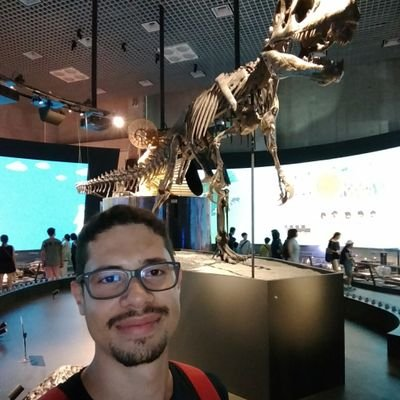

// Hi!

I’m a master researcher at I4Soft, Universidade Federal de Goiás, Brazil. My advisor is Celso Camilo-Junior and my research is focused in Computational Intelligence and Automated Program Repair. I hold a Computer Science bachelor from the same university where I’m doing my master’s research.
[Accepted] A Novel Fitness Function for Automated Program Repair Based on Source Code Checkpoints
Eduardo Souza, Claire Le Goues, Celso Camilo-Junior. GECCO 2018, Kyoto, Japan, Jul 2018.
[Accepted] A new word embedding approach to evaluate potential fixes for automated program repair
Leonardo Amorim, Mateus Freitas, Eduardo Souza, Celso Camilo-Junior, Altino Dantas, Wellington Martins. IJCNN@WCCI 2018, Rio de Janeiro, Brazil, Jul 2018.
Improved representation and genetic operators for linear genetic programming for automated program repair
Vinícius Oliveira, Eduardo Souza, Claire Le Goues, Celso Camilo-Junior.
Empirical Software Engineering, v. 22, p. 1-27, 2018.
Ternarius: um operador de mutação para o reparo de software baseado em busca com representação subpatch
Vinícus Oliveira, Eduardo Souza, Altino Dantas, Lucas Roque, Celso Camilo-Junior. WESB@CBSoft 2017, Fortaleza, Brazil, Sep 2017.
Improved Crossover Operators for Genetic Programming for Program Repair
Vinícius Oliveira, Eduardo Souza, Claire Le Goues, Celso Camilo-Junior. SSBSE 2016, Raleigh, USA, Oct 2016.
Um módulo para visualizar a evolução genotípica na ferramenta GenProg
Eduardo Souza, Cássio Rodrigues, Celso Camilo-Junior. CONPEEX 2016, Goiânia, Brazil, Oct 2016.
\